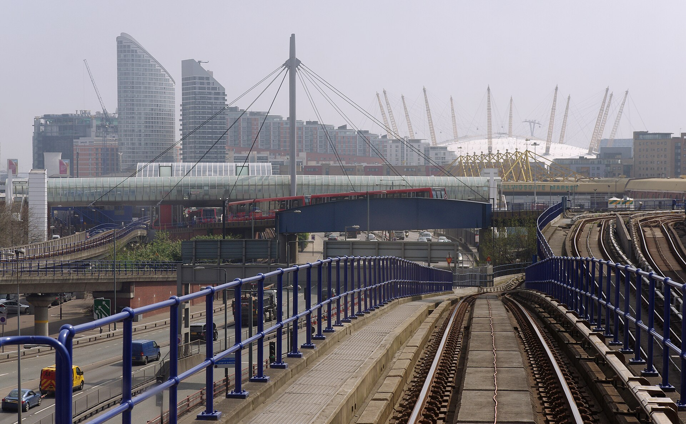

ШІ-агенти в автоматизації:від питання до перевіреного результату
Що таке ШІ: від регресії до агентів
Агентні середовища
Пастка амнезії Гелл-Манна
Практика: дослідження з агентом
Сергій Мірошниченко
старший викладач, аспірант кафедри автоматизації, електро- та робототехнічних систем ТОВ «Технічний університет «Метінвест Політехніка»», 2026
Чотири революції — і одне питання
Чи стануть ШІ-агенти п'ятою промисловою революцією?
Ми тут · 2026
1.0
Механізація≈1760–1840пара, ткацькі машини, залізниціавтоматизувалим'язову силу
2.0
Масове виробництво≈1870–1914електрика, сталь, конвеєравтоматизувалипотокове виробництво
3.0
Автоматизація≈1960-ті – 2000-нікомп'ютери, програмовані контролери, роботиавтоматизувалирутинні операції
4.0
Кіберфізичні системиз 2010-хінтернет речей, великі дані, хмариавтоматизуваликоординацію між машинами
?
ШІ-агенти2020-ті?великі мовні моделі + інструментиавтоматизуютьінтелектуальну роботу?
Кожна революція автоматизувала новий рівень праці:м'язи → конвеєр → рутина → зв'язки → мислення?
Джерела: K. Schwab, The Fourth Industrial Revolution (2016); Stanford Digital Economy Lab, We Must Act Now (2026)
Питання для обговорення
Чи буде в майбутньому якась професія, сфера діяльності людини, яка не буде автоматизована?
Що кажуть дослідники ШІ
Jascha Sohl-Dickstein, Anthropic
ICLR 2026 · воркшоп про науку й суспільство після AGI «Advice for a young investigator in the first and last days of the Anthropocene»
Майбутнє не буде лінійним продовженням теперішнього. Рішення про кар'єру й проєкти варто ухвалювати з урахуванням цього»
Швидкість
Як швидко розвивається ШІ
×4,7
на рік зростають обчислення на навчання найбільших моделей — ≈107 разів за десятиліття
2 → 12 год
за пів року: довжина програмістських задач (за часом фахівця), які модель виконує в половині спроб — METR
1,5 року
на питаннях рівня PhD: від вгадування до рівня, вищого за експертів
2025
«золото» на Міжнародній математичній олімпіаді
Лінійка закінчилася. З травня 2026 METR вважає виміри понад 16 годин ненадійними на своєму наборі задач, а з 8 вересня сторінку з графіком більше не оновлює.
Швидкість
Як виглядає ×4,7 щороку
Лінійна шкала · 2015 = 1
Прогнози
Коли
1–5 років
до AGI — консенсус лабораторій Сан-Франциско. «Довгі» прогнози там — 10–30 років
−13 років
на стільки експерти за один рік наблизили свій прогноз
Поточна модель — обізнаний, але часом нерозважливий аспірант»
Поради науковцям
Що радить робити
Швидкі, цільові проєкти — коротші за характерний час експоненти
«Гіркий урок» Саттона: будувати рішення, які з сильнішою моделлю працюватимуть краще, а не робити те, що вона зробить сама
Опановувати нові інструменти, навіть незручні. Сам доповідач веде аналіз у Claude Code
Ставити задачу моделі — та сама навичка, що й керувати аспірантом
«Безпечний» кар'єрний вибір насправді не безпечний
Характерний час експоненти
Довжина задач, які виконує модель, подвоюється приблизно кожні 3 місяці (METR, з 2024 року)
Фото Р. Саттона: Steve Jurvetson, CC BY 2.0, Wikimedia Commons

Питання із залу
Чи все зможуть моделі?
Моделі наближаються до здатності виконати будь-яку інтелектуальну задачу людини
Що з цим робити — питання суспільне, а не технічне. Машиністів тримають, хоча потяги вміють водити автоматично з 1980-х
Скептикам: перетворіть свою тезу на вимірюваний тест — і відстежуйте його
ЛюдинаСтавити задачуварту розв'язаннячітко й посильного обсягу
ШІВиконуватикод, розрахунки, графіки
ЛюдинаПеревірятимодель може впевнено помилитися
ЛюдинаВідповідати за результатза все, і за роботу ШІ: висновок підписує людина, а не модель
Саме це покажемо на практиці.
Що таке ШІ
Від регресії до агентів
Штучний інтелект
Символьний ШІ
Правила, експертні системи, нечітка логіка, пошук і планування
АСУТП: нечіткі регулятори
Машинне навчання
АСУТП: віртуальні датчики, аномалії
Модель сама підбирає коефіцієнти за даними: регресія, дерева рішень, кластеризація
Глибоке навчання
Багатошарові нейромережі
Великі мовні моделі (LLM)
Мільярди коефіцієнтів; модель передбачає наступний фрагмент тексту
АСУТП: код і звіти
Агент
Не новий тип моделі, а система довкола LLM: модель + інструменти (файли, термінал, браузер) + цикл «план → дія → результат → виправлення»
АСУТП: архівні дані
У демо — усі рівні разом: агент на LLM пише код, а в коді працює класичне ML — регресія
Агентні середовища
Три основні середовища
Claude Code
Anthropic
Термінал, редактор коду, застосунок. Моделі Claude
D:\проєкт>claude
Codex
OpenAI
Термінал і редактор коду. Моделі OpenAI
D:\проєкт>codex
Google Antigravity
Google
Застосунок для комп'ютера і термінальний Antigravity CLI. Моделі Gemini, можна обрати й інші
D:\проєкт>agy
Практика сьогодні — тут
Спільне
працюють у теці проєкту
самі запускають код
дозволи й пісочниця
багатокрокові задачі
Агентні середовища
Що всередині агентного середовища
МодельLLM
обв'язка (harness)
Циклна практиціплан → дія → результат → виправлення, доки задачу не виконано
Інструментина практиціфайли, термінал, браузер
Контекст і правилана практиціфайл правил проєкту; вимоги — у файлах, а не в розмові
Дозволи й пісочницяна практиціщо агентові можна, а що ні; критерії й тести він не змінює
Роліна практиціокремі сесії з різними інструкціями: виконавець, рецензент
Скілизбережені методики, які агент підвантажує, коли потрібно
MCPстандартний «роз'єм» до бази, історіана, документації; в АСУТП — лише читання
Хукиавтоматичні перевірки на подіях: наприклад, тести після кожної зміни
Та сама модель у чаті й в агентному середовищі працює по-різному — через обв'язку
Агентні середовища
Чат проти агентного середовища
Чат
Агентне середовище
Доступ до даних
Лише те, що ви вставили чи завантажили
Працює безпосередньо в теці проєкту
Код
Ви копіюєте, запускаєте й повертаєте помилки
Сам запускає, бачить помилку й виправляє
Багатокрокова робота
Між кроками «руками» працюєте ви
Цикл «план → виконання → перевірка»
Результат
Розмова
Скрипти, звіти, історія змін, які можна відтворити
Контроль
—
Дозволи, заборони, пісочниця
Ролі
Одна розмова
Окремі сесії з різними ролями: виконавець, рецензент
Історія
В акаунті провайдера
Локально, а запити — у провайдера за його політикою
Агентні середовища
Хто крутить цикл
Агентні середовища
Чат не зникає
Мінуси роботи через чат
Постійний копіпаст
Модель не бачить реальних даних і не може перевірити себе запуском
Контекст губиться
Результат неможливо відтворити
Чат — для розмови й ідей
Як розрахувати природну вологість повітря з температури, вологості й тиску?
Ось формула й пояснення кожного члена
На практиці методику з'ясуємо в чаті за документом — RAG
Агент — для роботи з файлами й даними
› читаю дані з master-class/data
› пишу scripts/check.py
› запускаю — KeyError: 'date'
› виправляю й запускаю знову
✓ готово: plots/fig1.png
Агентні середовища
Агентний flow і агентний loop
Flowпотік кроків: їх наперед задає людина чи програма — передбачувано й відтворювано
Loopцикл усередині кроку: модель сама обирає наступну дію й інструмент — у межах дозволів
1Методикаглибокий пошук і RAG
2Знеособленняагент + людина
3Надані даніагент
4Відкриті даніагент
5Модельагент
6Рецензіярецензент
7Висновкилюдина
Після кожного оберту агент перевіряє критерії приймання. Виходів три, і умови задаємо до старту:
Критерії виконанорезультат — людині на перевірку
Не виконано, ліміт не вичерпаноще один оберт
Вичерпано спроби, бюджет чи час — або потрібен дозвілзупинка, рішення за людиною
Починайте з найпростішого: агентність — лише там, де вона виправдана. Наш метод — flow із 7 кроків, а loop крутиться лише всередині агентних.
Anthropic, «Building effective agents», 2024
Агентні середовища
Глибокий пошук і RAG
ERA5 приземна вологістьформула вологості повітряперевірка моделей часових рядів
[1][2][3]
Глибокий пошук
Для чого: модель сама робить десятки пошуків в інтернеті, читає джерела й пише звіт з посиланнями
Ризик: джерела не перевірені, логічні ланцюжки слабкі — тому звіт перевіряють у звичайному режимі
У методі: крок 1
інструкція.pdfстандарт.pdfзвіт.docx
Що в інструкції сказано про калібрування?
Відповідь лише з ваших документів [1] інструкція.pdf
RAG
Для чого: відповіді лише з ваших документів — інструкцій, стандартів, звітів — з посиланнями на них
Ризик: модель візьме не той фрагмент або стару версію документа
У методі: крок 1 · Gemini Notebook, раніше NotebookLM
Глибокий пошук шукає по всьому інтернету, а RAG — лише у ваших документах.
Агентні середовища
Від промпту до контексту
Промпт-інженерія: що сказати моделі
«Відтвори ряд вологості з 2020 року за відкритими даними»
яка величина й одиниці?звідки відкриті дані?погодинно чи за добу?чим перевірити розрахунок?що з пропусками й дублікатами?як чесно перевірити модель?з яким інтервалом прогнозу?які рисунки й звіт?
Добре завдання: роль · мета · дані · обмеження · критерії приймання · формат результату
Контекст-інженерія: що модель бачить
роль і правилапрочитані файлививід командісторія розмови
Вікно контексту обмежене: коли воно переповнене, модель гірше тримає головне
Стисненняісторія → короткий підсумокФайливимоги й результати поза розмовою: стиснення їх не зітреОкрема сесіячистий контекст, як у рецензента
Промпт — що сказати. Контекст — усе, що модель бачить. Метапромптинг — коли промпт пише сама модель: людина ставить мету, модель складає з неї детальне завдання, людина його перевіряє.
Anthropic, «Effective context engineering for AI agents», 2025
Агентні середовища
Команди керування агентом
Antigravity CLI
Що робить
Поняття
/grill-me
Перш ніж братися до роботи, агент розпитує про вимоги — по одному питанню
промпт
/plan
Агент складає план, а ви читаєте й погоджуєте його до будь-яких змін
flow
/goal
Агент працює сам, доки ціль не перевірено як виконану або доки ви не зупините
loop
/context
Скільки вікна контексту вже зайнято
контекст
/compact
Стиснути розмову в підсумок і звільнити вікно
контекст
/clear
Почати розмову з чистого контексту
контекст
/permissions
Що агентові дозволено, що заборонено, а що — лише з вашого підтвердження
безпека
У Claude Code і Codex — ті самі /plan, /compact, /clear, а /init створює файл правил проєкту. Назви змінюються від версії до версії: повний список — /help.
Агентні середовища
Що бачить модель, те бачить провайдер
Ваш комп'ютер
ваш запитфайли, які прочитав агентвивід команд
Історія агента — на диску, разом з усім, що він прочитав
увесь контекст — з кожним запитом
Провайдер моделі
30 днів — Anthropic, OpenAI72 години — Gemini з вимкненою історієюпозначене фільтрами безпеки — довше
Навчання на ваших даних залежить від акаунта й налаштувань; у частині продуктів воно увімкнене за замовчуванням
Вимкнене навчання ≠ дані не залишають комп'ютер. Тому сирих даних агент не бачить: він пише код, а запускаємо його ми. Це побачите на практиці.
Агентні середовища
Принципи безпеки роботи з даними
Чутливе — не лише персональне:погодинні рапортирежими роботиенергоспоживанняжурнали аварійсхема мережі
Агентбачить опис даних і вигаданий зразок, пише скрипт
Людинаперевіряє скрипт і запускає його в окремому терміналі
Скриптчитає реальні дані й віддає лише потрібне: агрегати чи знеособлений ряд
реальні дані — лише тут
Агентпрацює з результатом
Організаційний рівень
Комерційний акаунт або API, навчання й телеметрію вимкнено, використання даних погоджено з їхнім власником
Правила інструменту
на практиці
Заборони на теки й файли. Це м'який бар'єр: скрипт, який запустив агент, його обходить
Ізоляція ОС
на практиці
Пісочниця, окремий обліковий запис, контейнер без мережі — або даних на цій машині немає зовсім
Знеособлення
на практиці
Лише потрібні поля, нейтральні назви, нормування. Ризик зменшує, але не прибирає
Дані захищає архітектура, а не прохання до агента. Агентові — копії даних, а не доступ до систем керування. Передати результат у систему керування — окремий проєкт інженерів з перевіркою й затвердженням.
Пастка амнезії Гелл-Манна
Звідки ефект
Майкл Крайтон, 2002Автор «Парку Юрського періоду», виступ «Why Speculate?». У статті на знайому тему бачите, що журналіст плутає факти й навіть причину з наслідком. На сусідній сторінці — знову вірите кожному слову.
Фото: Jon Chase / Harvard News Office, CC BY 3.0, Wikimedia Commons
Мюррей Гелл-МаннФізик, нобелівський лауреат. Ефект названо його ім'ям напівжартома: Крайтон колись обговорював ефект з Гелл-Манном, а гучне ім'я додає ваги.
Фото: Melirius; похідна робота Dmitry89, CC BY-SA 3.0, Wikimedia Commons
Пастка амнезії Гелл-Манна
Версія для ШІ
Своя галузь
Бачите поверхневість і впевнені помилки
✗ Помилки видно одразу
Чужа галузь: код, статистика, право, медицина
Відповідь здається блискучою
✓ Виглядає бездоганно
✗ Помилок стільки ж — ви їх не бачили
ШІ не стає розумнішим, коли змінюється тема. Ви просто втрачаєте здатність помітити помилку.
Хто не програмує — побачить в агентові «геніального програміста»
Програмісти — помітять огріхи в коді, але повірять агентові в метеорології, статистиці чи металургії
Ч. Атлас, «The Gell-Mann Amnesia Trap», 2025 · Д. Нільсен, «A in AI stands for amnesia», 2025
Пастка амнезії Гелл-Манна
Захист — незалежні перевірки
Відома відповідь
контрольний приклад з відомим результатом
Фізичні межі
чи це взагалі можливо
Друге джерело
незалежні дані
Окремий рецензент
окрема сесія з іншою роллю
Візуалізація
подивитися на сирі дані
Саме з цих перевірок складається метод, який ми пройдемо на практиці. Навіть якщо ви не фахівець — є способи перевірити.
Окремий рецензент — це рецензія, а не доказ: моделі можуть помилятися однаково. Доказ дають перевірки, незалежні від моделі.
Практика · задача
Що шукаємо і навіщо
Потрібно: природна вологість щодня — з 2020 року до сьогодні
2020202120222023202420252026
Є: 559 діб вимірювань, нових не буде 01.11.2024 – 13.05.2026
НавіщоЩоб порахувати повну вологість дуття за кожен день з 2020 року й оцінити її вплив на витрату коксу й продуктивність
ВеличинаМаса водяної пари в 1 м³ сухого повітря, г/м³
Практика · задача
Обмеження і як їх обходимо
ОбмеженняЯк обходимо
Вимірювання — у закритому рапорті поруч з даними, яких агентові бачити не можна
Агент пише скрипт знеособлення, людина запускає: агентові — лише дата й вологість
Метеодані дають температуру, вологість і тиск, але не нашу величину
Методику знаходимо глибоким пошуком і RAG, величину рахуємо з відкритих погодинних даних
Вимірювань лише півтора року, літо — один раз
Модель зв'язку з відкритими даними; кожен місяць вона передбачає, не бачивши його
Агент може впевнено помилитися
Окремий агент-рецензент перевіряє всю роботу, висновки підписує людина
Практика · задача
Що це має дати
Ряд вологості щодня — з 01.01.2020 до вчора
Межі, у яких ряду можна вірити: похибка на перевірці й інтервал прогнозу
Шлях, який можна повторити: скрипти, звіти, рисунки й рецензія — у файлах
Висновки, які перевірила людина: що встановлено, а що лише гіпотеза
Практика
Від питання до перевіреного результату
Наживо в Antigravity CLI
Вологість: від закритих даних до висновків
1Методикаглибокий пошук і RAG2Знеособленняагент пише скрипт, людина запускає3Дані, відкриті дані, модельагент-виконавець4Рецензія й виправленняагент-рецензент5Висновкилюдина
Підсумки
П'ять думок, які варто забрати
01ШІ — не лише чат‑боти
Регресія — теж машинне навчання, а агент — система довкола LLM
02Агент працює з вашими файлами, кодом і даними
Це його сила і водночас ризик
03Цінність зміщується
Від написання коду — до постановки задачі й перевірки
04Перевіряй, а не вір
Особливо там, де ти не експерт
05Що бачить модель, те бачить провайдер
Сирих даних агент не бачить
Підсумки
Що робила людина
ставила питання
визначала критерії
перевіряла фізичний сенс
дивилася на дані
ухвалювала висновки
Висновки — відповідальність людини: агент готує чернетку, людина перевіряє кожне твердження, вирішує й підписує.
Програмування не знецінюється — воно стає мовою перевірки»
Питання?
Сергій Мірошниченко
старший викладач, аспірант кафедри автоматизації, електро- та робототехнічних систем ТОВ «Технічний університет «Метінвест Політехніка»»